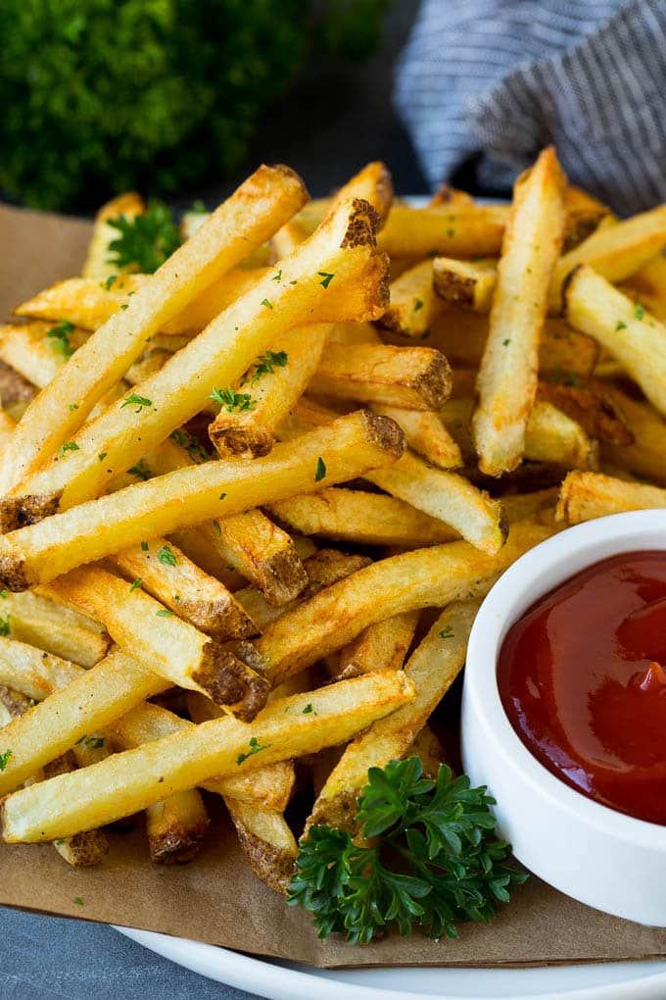

French Fries

~Description~
French fries are the best. With all of these dishes
I really feel like I am stuck in childhood..
Maybe I should start eating like an adult..
~Ingridients~
- Potatos
- Salt
- Paper
- Topping
~How~
- Peel the potatos
- Cut to small sticks
- Deep fry them
- Put in a dish > Salt and paper